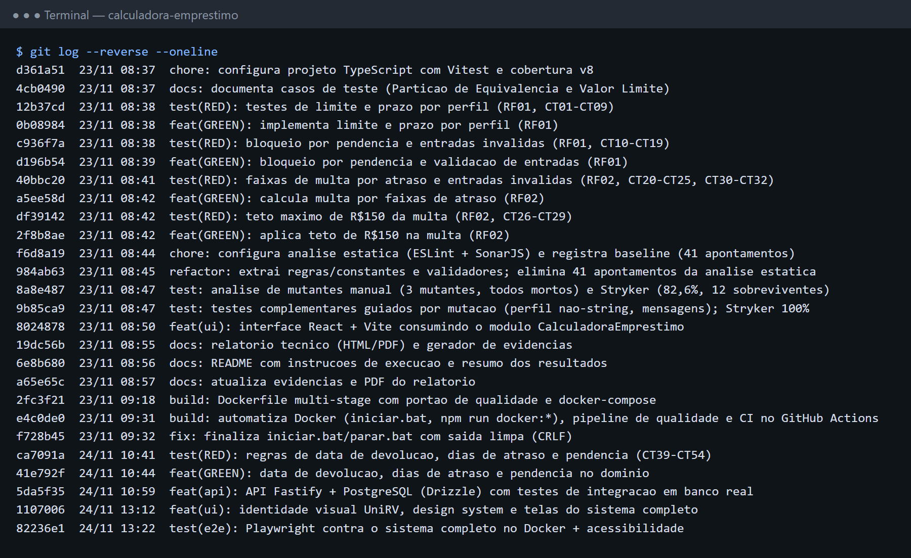
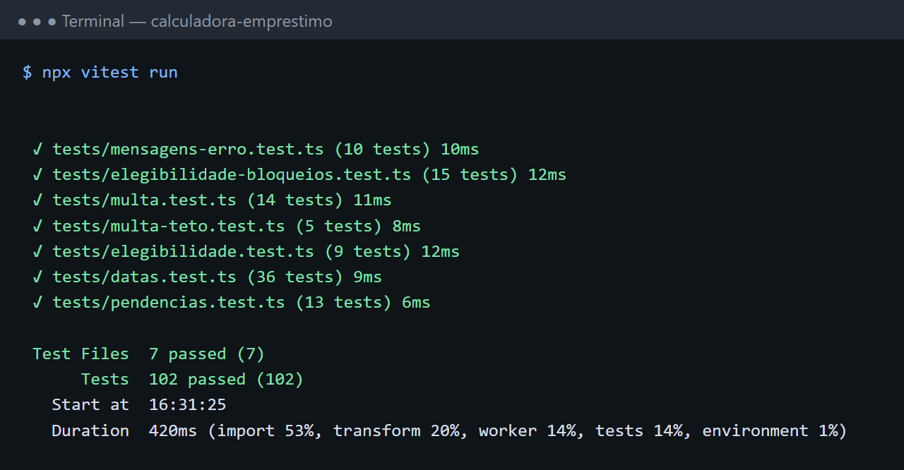
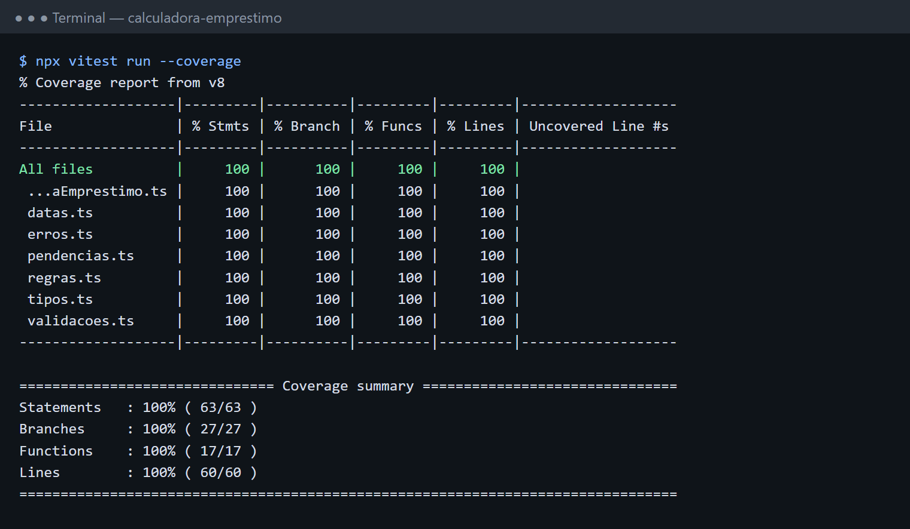
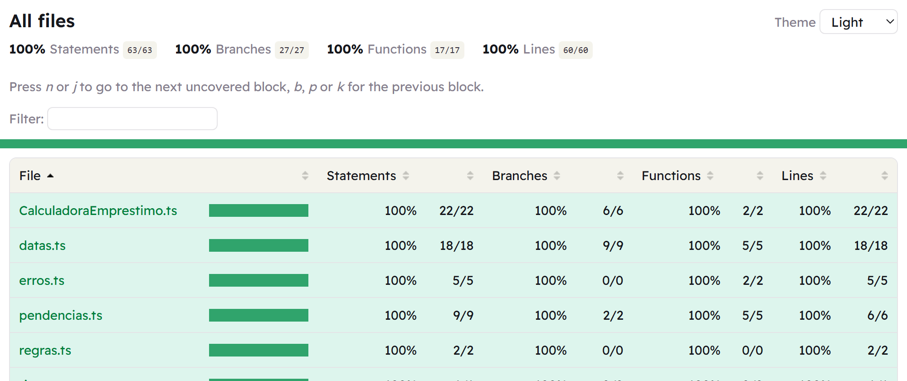
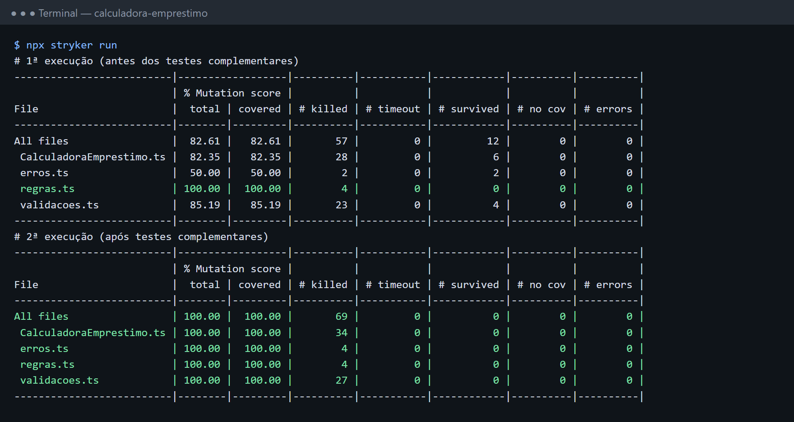
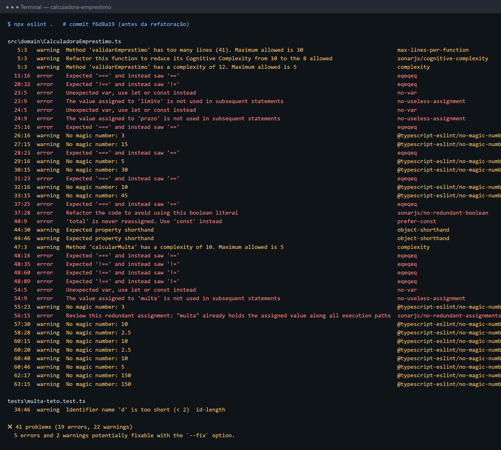
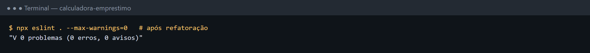
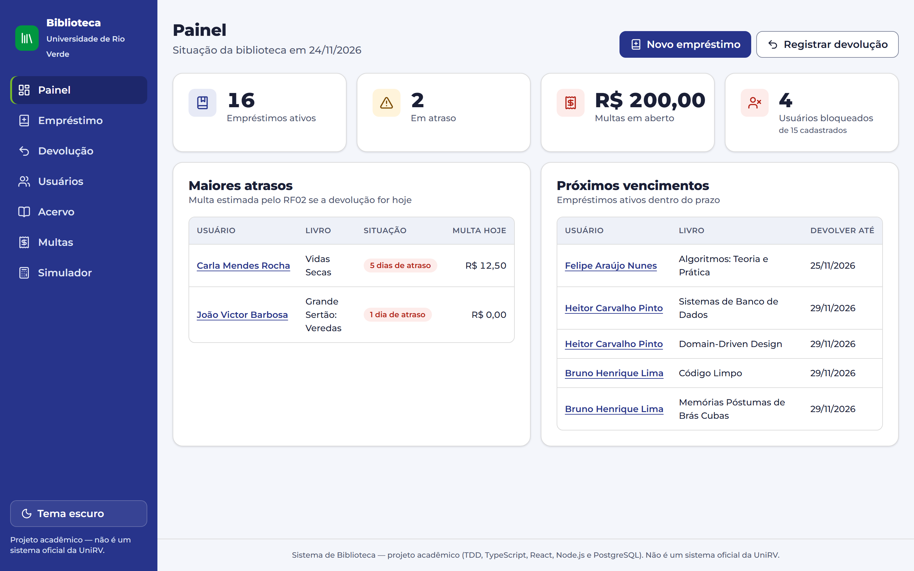

CalculadoraEmprestimoProjeto, implementação (TDD) e validação de regras de negócio — biblioteca universitária
Stack: TypeScript 5.9 (modo strict) sobre Node.js 24; Vitest 5 (testes unitários) com
@vitest/coverage-v8 (cobertura de linhas e ramos); ESLint 10 + typescript-eslint + eslint-plugin-sonarjs
(análise estática com as regras do SonarQube); Stryker Mutator (mutação automática, complementar à manual);
React 19 + Vite 8 (interface com a identidade visual da UniRV) e API Fastify + PostgreSQL 17, que usam o mesmo módulo em empréstimos e devoluções reais, com testes de integração em banco real e E2E (Playwright). O domínio (src/domain) não depende de
UI: CalculadoraEmprestimo.ts (métodos validarEmprestimo e calcularMulta),
regras.ts (tabela de limites/prazos e constantes financeiras), validacoes.ts, erros.ts
(ArgumentoInvalidoError ≙ IllegalArgumentException; RegraNegocioError com motivo
PENDENCIA | LIMITE_EXCEDIDO). Comandos: npm test, npm run coverage,
npm run lint, npm run mutantes, npm run mutation:auto, npm run dev.
Classes derivadas somente da especificação, antes do código (docs/casos-de-teste.md, commit 2).
| Req. | Entrada | Classes válidas | Classes inválidas (→ ArgumentoInvalidoError) |
|---|---|---|---|
| RF01/02 | perfil | CE01 GRADUACAO (lim. 3 / 15 d); CE02 POS_GRADUACAO (lim. 5 / 30 d); CE03 PROFESSOR (lim. 10 / 45 d) | CE04 nulo/indefinido; CE05 desconhecido ('VISITANTE'); não-string (array, objeto, número) |
| RF01 | livros emprestados | CE06 inteiro ≥ 0 | CE07 negativo; CE08 não inteiro / NaN |
| RF01 | livros solicitados | CE09 inteiro ≥ 1 | CE10 zero ou negativo; CE11 não inteiro / Infinity |
| RF01 | pendência | CE12 false (segue); CE13 true (→ RegraNegocioError PENDENCIA) | CE14 não booleano (undefined, 'sim') |
| RF01 | atuais + solicitados | CE15 ≤ limite (aprovado); CE16 > limite (→ RegraNegocioError LIMITE_EXCEDIDO) | — |
| RF02 | dias de atraso | CE17 0–3 (R$ 0); CE18 4–10 (R$ 2,50 × d); CE19 11–34 (25 + 5 × (d − 10)); CE20 ≥ 35 (teto R$ 150) | CE21 negativo; CE22 não inteiro / NaN |
Ponto do teto: para d > 10, multa = 25 + 5(d − 10); 25 + 5(d − 10) = 150 ⇒ d = 35. Testes: 34 / 35 / 36 dias.
| ID | Perfil | Atuais + Solic. | Fronteira | Esperado |
|---|---|---|---|---|
| CT01 | Grad. | 0 + 3 | = limite | aprova, 15 d |
| CT02 | Grad. | 2 + 1 | = limite | aprova |
| CT03 | Grad. | 3 + 1 | limite + 1 | recusa (limite) |
| CT04 | Grad. | 0 + 4 | limite + 1 | recusa (limite) |
| CT05 | Pós | 4 + 1 | = limite | aprova, 30 d |
| CT06 | Pós | 5 + 1 | limite + 1 | recusa (limite) |
| CT07 | Prof. | 9 + 1 | = limite | aprova, 45 d |
| CT08 | Prof. | 10 + 1 | limite + 1 | recusa (limite) |
| CT09 | Grad. | 0 + 1 | mínimo válido | aprova |
| CT10 | Grad. | −1 + 1 | atuais = −1 | ArgumentoInválido |
| CT11 | Grad. | 0 + 0 | solic. = 0 | ArgumentoInválido |
| CT12 | todos | 0 + 1 | pendência = true | recusa (pendência) |
| CT19 | Grad. | 3 + 5 | pendência + limite | motivo = pendência |
| ID | Dias | Fronteira | Cálculo | Esperado |
|---|---|---|---|---|
| CT20 | −1 | abaixo do domínio | — | ArgumentoInválido |
| CT21 | 0 | início tolerância | — | R$ 0,00 |
| CT22 | 3 | fim tolerância | — | R$ 0,00 |
| CT23 | 4 | início 1ª faixa | 4 × 2,50 | R$ 10,00 |
| CT24 | 10 | fim 1ª faixa | 10 × 2,50 | R$ 25,00 |
| CT25 | 11 | início 2ª faixa | 25 + 1 × 5 | R$ 30,00 |
| CT26 | 34 | teto − 1 | 25 + 24 × 5 | R$ 145,00 |
| CT27 | 35 | atinge o teto | 25 + 25 × 5 | R$ 150,00 |
| CT28 | 36 | teto + 1 | 155 → teto | R$ 150,00 |
| CT29 | 1000 | extremo | → teto | R$ 150,00 |
| CT30 | 4,5 / NaN | não inteiro | — | ArgumentoInválido |
| CT31 | 5 | perfil nulo/desc. | — | ArgumentoInválido |
| CT32 | 15 | 3 perfis | 25 + 5 × 5 | R$ 50,00 (todos) |
Representantes de classe: CE18 (7 d → R$ 17,50) e CE19 (20 d → R$ 75,00). Inválidos sem fronteira numérica: CT13–CT18 (perfil nulo/indefinido/desconhecido, livros não inteiros/infinito, pendência não booleana). Complementares criados pela análise de mutação: CT33–CT38 (seção 6).
Cada incremento seguiu RED → GREEN → REFACTOR: o teste foi commitado falhando (saídas salvas em
docs/evidencias/01-red-*.txt, 03-red-*, 05-red-*, 07-red-*) e só então o código
mínimo que o fazia passar. Todo método de teste segue o padrão AAA, com os blocos // Arrange,
// Act, // Assert explícitos; o Act de exceções é capturado em uma função
(const acao = () => …) e verificado no Assert.



A primeira medição (após o ciclo GREEN do teto) já resultou em 100% de linhas (45/45) e de ramos (38/38), pois os
testes foram derivados da AVL, que exercita os dois lados de cada decisão. Após a refatoração o código passou a ter
16 ramos (menos decisões), mantidos em 100% — e assim seguiram com as regras novas (27/27). O limite mínimo de 90% está configurado como
threshold em vitest.config.ts: abaixo disso, npm run coverage falha.

coverage/index.html).scripts/mutantes.mjs)| ID | Tipo de defeito | Local | Original → Mutante | Testes que falharam | Resultado | Ajuste na suíte |
|---|---|---|---|---|---|---|
| M1 | Operador relacional | validarEmprestimo | total > limite → total >= limite | 4/43 (CT01, CT02, CT05, CT07) | MORTO | Nenhum — fronteira “= limite” já testada |
| M2 | Constante financeira | regras.ts | VALOR_DIA_PRIMEIRA_FAIXA: 2.5 → 2.0 | 8/43 (CT23–CT27…) | MORTO | Nenhum |
| M3 | Inversão de condição lógica | validarEmprestimo | if (possuiPendencia) → if (!possuiPendencia) | 13/43 (CT12, CT19, CT01…) | MORTO | Nenhum |
Após cada mutante o código original foi restaurado (o script reverte em um bloco finally e roda a suíte
novamente: 43/43 passando). Escore manual: 3/3 = 100%.

Com 100% de cobertura, o Stryker gerou 69 mutantes e 12 sobreviveram:
StringLiteral: mensagens e name das exceções trocadas por "". Os testes
verificavam apenas o tipo do erro, não o conteúdo exibido ao usuário.ConditionalExpression: typeof perfil !== 'string' → false. Revelou um
defeito latente: sem a checagem, ['GRADUACAO'] seria aceito, pois Object.hasOwn converte o array
para a chave "GRADUACAO".Ajuste: criação de tests/mensagens-erro.test.ts (CT33–CT38: perfil não-string, mensagens com campo,
valor e mínimo; motivo e texto das recusas). Resultado: 69/69 mortos (100%).
Ferramenta: ESLint com typescript-eslint e eslint-plugin-sonarjs (regras do SonarQube), aplicada a
código-fonte e testes. Limiares: complexidade ciclomática ≤ 5, cognitiva ≤ 8, ≤ 30 linhas por função, ≤ 4 parâmetros.
O código GREEN foi escrito propositalmente “mínimo para passar” (etapa natural do TDD) e então refatorado.

f6d8a19): 41 problemas (19 erros, 22 avisos).| Regra (categoria) | Antes | Depois |
|---|---|---|
no-magic-numbers (números mágicos) | 15 | 0 |
eqeqeq (==/!= sem tipo) | 10 | 0 |
no-var / prefer-const | 4 | 0 |
no-useless-assignment, sonarjs/no-redundant-assignments | 4 | 0 |
complexity / sonarjs/cognitive-complexity | 3 | 0 |
max-lines-per-function (método longo) | 1 | 0 |
object-shorthand, no-redundant-boolean | 3 | 0 |
id-length (nomenclatura: d) | 1 | 0 |
| Total | 41 | 0 |
| Função | Ciclomática | Cognitiva |
|---|---|---|
validarEmprestimo | 12 → 3 | 10 → 2 |
calcularMulta | 10 → 2 | 7 → 1 |
garantirPerfilValido (nova) | 3 | 1 |
garantirInteiroMinimo (nova) | 3 | 1 |
garantirBooleano (nova) | 2 | 1 |
Refatorações: cadeia if/else por perfil → tabela REGRAS_POR_PERFIL;
literais → REGRAS_MULTA; faixas → Math.min (1ª faixa e teto); validações extraídas e
reutilizadas pelos dois métodos; ===, const, shorthand. | ||


npm run docker:subir): painel com indicadores calculados pelo módulo.Este trabalho demonstra na prática por que 100% de cobertura não garante ausência de defeitos: a suíte já cobria todas as linhas e todos os ramos quando o Stryker encontrou 12 mutantes sobreviventes — inclusive um defeito real (perfis do tipo array sendo aceitos). Cobertura mede apenas que o código foi executado, não que seu resultado foi verificado: um teste sem asserções relevantes, ou que confere só o tipo da exceção, cobre a linha sem detectar o erro. Além disso, cobertura não enxerga requisitos ausentes ou mal interpretados (o código só pode ser fiel ao que foi especificado), combinações de valores que percorrem os mesmos ramos, nem problemas de integração, desempenho ou usabilidade. Por isso a cobertura funciona melhor como indicador negativo (revela o que não foi testado) e deve ser combinada com técnicas que avaliam a qualidade dos testes, como a análise de mutação, e com técnicas de projeto de casos como Partição de Equivalência e Valor Limite.
O Princípio de Pareto (80/20), aplicado a testes, afirma que a maior parte dos defeitos se concentra em uma pequena parte do sistema — fronteiras de regras de negócio, cálculos financeiros, código complexo ou alterado com frequência. Em projetos reais, com prazo e orçamento limitados, ele orienta a priorizar o esforço por risco: concentrar testes rigorosos (AVL, mutação, revisão) nos 20% de maior impacto e probabilidade de falha, em vez de perseguir 100% de cobertura em código trivial. Neste módulo, essa parte crítica são os limites de livros por perfil, as transições de faixa da multa (3/4, 10/11 dias) e o teto (35 dias) — exatamente onde os mutantes M1 e M2 foram mortos. Métricas como complexidade ciclomática, histórico de defeitos e frequência de mudança ajudam a localizar esses 20% e a direcionar o investimento em testes onde ele traz mais retorno.